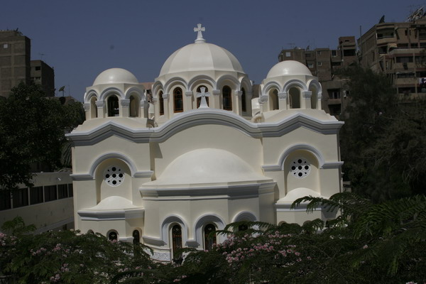

عن الكنيسة
في سنة 1924م فكر بعض أقباط الزيتون فى بناء كنيسة؛ لأنه لم يكن فى هذة الضاحية الكبيرة أي كنيسة على الإطلاق، فلجأوا إلى المرحوم الأستاذ خليل إبراهيم.. وكان غنياًّ وطلبوا منه التبرع بقطعة أرض لبناء الكنيسة فوعدهم بذلك.. وبدأوا يجمعون التبرعات، وفي أثنائها توفي المرحوم خليل إبراهيم، فتقدم الأقباط بما جمعوه وقدره450 جنيهاً إلى الأستاذ توفيق خليل نجل المرحوم خليل إبراهيم، فاعتذر عن قبول المبلغ وطالب بإعادة ما جُمِع إلى أصحابه، وقال للمجتمعين به:إن والده كان معتزماً أن يبني الكنيسة على نفقته الخاصة، ولذلك سألتزم نيابة عنه بتنفيذ هذه الرغبة اتفق الأستاذ توفيق خليل مع مهندس إيطالي يسمى ليموفيلي لكي يصنع تصميم كنيسة السيدة العذراء بالزيتون على نسق كنيسة القديسة أجيا صوفيا بالقسطنطينية. وتم بناؤها سنة 1925م، وقام بتدشينها المطوب الذكر المتنيح الأنبا أثناسيوس مطران بنى سويف.. وأول كاهن خدم بالكنيسة هو المتنيح القمص دانيال مسيحة. . وبداخل الكنيسة أيقونات كثيرة للسيدة العذراء، والملائكة، والقديسين.وقد تم رسم أيقونات جديدة بها مع ظهور السيدة العذراء بالكنيسة مثل صورة السيدة العذراء بالقبة الرئيسية بالكنيسة، وكذلك بعض الأيقونات التى أهديت للكنيسة من الإمبراطور هيلاسيلاسي عند زيارته للكنيسة وأما مساحة كنيسة الظهور فهي250 متراً مربعاً، ولها خمس قباب، الوسطى الكبرى ترتفع عن الأرض 17 متراً ولها شبابيك تفتح على صحن الكنيسة ويعلوها صليب كبير.. أما الأربع قباب الأخرى فأقل حجماً وترتفع 12 متراً عن الأرض ولها فتحات ولكنها غير متصلة بالكنيسة، فأرضها تكون سقف الكنيسة

وفقا لرواية القس باسليوس عن تاريخ «كنيسة العذراء» فى الزيتون، فيقول: «التفكير فى تشييدها بدأ عام 1912، إذ اجتمع أهل المنطقة على فكرة ضرورة إنشائها لعدم وجود كنيسة بالمنطقة. ورغم كون المجتمعين على الفكرة أغلبهم من بسطاء (الزيتون)، فقد شرعوا فى عمل اكتتاب فى عام 1914 لشراء أرض لبناء الكنيسة المنشودة. ومرت الأعوام حتى عام 1924، ولم يكن ما تم جمعه قد تجاوز عشرات الجنيهات لا تكفى لإتمام المشروع الكبير
ويكمل القس باسليوس راويا: «ذهب أقباط الزيتون إلى المحامى الثرى خليل إبراهيم، طلبا للمساعدة، ففوجئوا به يتعهد بالتبرع بالأرض وبتكاليف البناء، رافضا الاستعانة بما جمعوه فى الاكتتاب. وبعد وفاته عن عمر 92 عاما، أوفى ابناه توفيق وفيكتوريا هانم بما وعد به والدهما. وأقيمت الكنيسة على أرض مساحتها 250 مترا مربعا